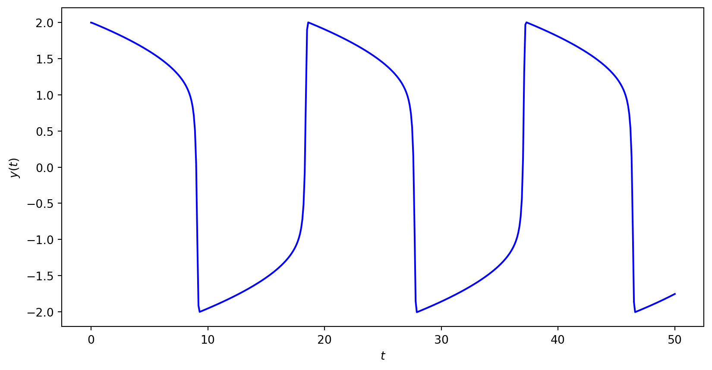

6G6Z3017 Computational Methods in ODEs
Recall that the general form of a Runge-Kutta method to solve a first-order ODE \(y'=f(t,y)\) is
\[ \begin{align*} y_{n+1} &=y_n + h \sum_{i=1}^s b_i k_i,\\ k_i &=f(t_n +c_i h,y_n + h \sum_{j=1}^s a_{ij} k_j). \end{align*} \]
Expanding out the stage value functions we have
\[\begin{align*} k_1 &= f(t_n + c_1 h, y_n + h (a_{11} k_1 + a_{12} k_2 + \cdots + a_{1s} k_s), \\ k_2 &= f(t_n + c_2 h, y_n + h (a_{21} k_1 + a_{22} k_2 + \cdots + a_{2s} k_s), \\ & \vdots \\ k_s &= f(t_n + c_1 h, y_n + h (a_{s1} k_1 + a_{s2} k_2 + \cdots + a_{ss} k_s). \end{align*}\]
The value of \(k_1\) appears within the function on the right-hand side of \(k_1\) and similar for the other stage values. This means these functions are implicit functions hence we have an implicit Runge-Kutta method.
The Butcher tableau for an implicit method is
\[ \begin{array}{c|cccc} c_1 & a_{11} & a_{12} & \cdots & a_{1s} \\ c_2 & a_{21} & a_{22} & \cdots & a_{2s} \\ \vdots & \vdots & \vdots & \ddots & \vdots \\ c_s & a_{s1} & a_{s2} & \cdots & a_{ss} \\ \hline & b_1 & b_2 & \cdots & b_s \end{array} \]
Note that the \(A\) matrix in the upper right-hand region of an implicit method can have non-zero elements in them main diagonal and upper triangular region whereas the \(A\) matrix for an explicit method has non-zero elements in the lower triangular region only.
Deriving Implicit Runge-Kutta (IRK) methods is done similarly to that for Explicit Runge-Kutta (ERK) methods where the values of the \(a_{ij}\), \(b_i\) and \(c_i\) coefficients are chosen to satisfy a set of order conditions.
These order conditions were derived by Butcher (1964) based on the structure of rooted trees using a similar method we used to derive the order conditions for explicit methods.
Note
\[ \begin{align*} B(k): && \sum_{i=1}^s b_i c_i^{j-1} = & \frac{1}{j}, & j&=1\ldots k, \\ C(k): && \sum_{j=1}^s a_{ij} c_j^{\ell-1} = & \frac{1}{\ell}c_i^{\ell} , & i&=1 \ldots s, & \ell &=1 \ldots k,\\ D(k): && \sum_{i=1}^s b_i c_i^{\ell-1} a_{ij} = & \frac{1}{\ell}b_j (1-c_j^{\ell}), & j&=1 \ldots s, & \ell &=1 \ldots k. \end{align*}\]
The \(k\)th order the Legendre polynomial is
\[ P_k (x)=\sum_{i=0}^n \binom{n}{i} \binom{n+i}{i} \left( x - 1 \right)^i, \]
where \(\displaystyle{n \choose i} = \dfrac{n!}{i!(n - i)!}\) is the binomial coefficient.
For example, a second-order Legendre polynomial is
\[\begin{align*} P_2(x) &= \binom{2}{0} \binom{2}{0} (x - 1)^0 + \binom{2}{1} \binom{3}{1} (x - 1)^1 + \binom{2}{2}\binom{4}{2} (x - 1)^2 \\ &= 1 + (2)(3)(x - 1) + (1)(6)(x^2 - 2x + 1) \\ &= 1 + 6x - 6 + 6x^2 - 12x + 6 \\ &= 6x^2 - 6x + 1 \end{align*}\]
\[ P_k (x)=\sum_{i=0}^n \binom{n}{i} \binom{n+i}{i} \left( x - 1 \right)^i, \]
Activity: Determine the third-order Legendre polynomial
\[\begin{align*} P_3(x) &= \binom{3}{0} \binom{3}{0} (x - 1)^0 + \binom{3}{1} \binom{4}{1} (x - 1)^1 + \binom{3}{2}\binom{5}{2} (x - 1)^2 + \binom{3}{3}\binom{6}{3} (x - 1)^3 \\ &= 1 + 3(4)(x - 1) + 3(10)(x^2 - 2x + 1) + 1(20)(x^3 - 3x^2 + 3x - 1) \\ &= 1 + 12x - 12 + 30x^2 - 60x + 30 + 20x^3 - 60x^2 + 60x - 20 \\ &= 20x^3 - 30x^2 + 12x - 1 \end{align*}\]
An \(s\)-stage Gauss-Legendre method has order \(2s\)
For an order \(k\) Gauss-Legendre IRK method, the values of the \(c_i\) coefficients are chosen to be the roots of the Legendre polynomial
\[ P_k (x)=\sum_{i=0}^n \binom{n}{i} \binom{n+i}{i} \left( x - 1 \right)^i, \]
The values of \(a_{ij}\) and \(b_i\) are then chosen to satisfy the \(B(2k)\) and \(C(k)\) order conditions
\[ \begin{align*} B(k): && \sum_{i=1}^s b_i c_i^{j-1} = & \frac{1}{j}, & j&=1\ldots k, \\ C(k): && \sum_{j=1}^s a_{ij} c_j^{\ell-1} = & \frac{1}{\ell}c_i^{\ell} , & i&=1 \ldots s, & \ell &=1 \ldots k. \end{align*}\]
Derive a fourth-order Gauss-Legendre method.
Since \(k = 2s\), then a fourth-order Gauss-Legendre method requires 2 stages.
The values of \(c_1\) and \(c_2\) are the roots of \(P_2(x) = 0\). Since \[ \begin{align*} P_2(x) = 6x^2 - 6x + 1, \end{align*} \] then \(c_1 = \dfrac{1}{2} - \dfrac{\sqrt{3}}{6}\) and \(c_2 = \dfrac{1}{2} + \dfrac{\sqrt{3}}{6}\)
The values of \(b_i\) and \(a_{ij}\) satisfy the \(B(4)\) and \(C(2)\) order conditions respectively.
The \(B(2)\) condition is
\[ \begin{align*} B(k): && \sum_{i=1}^2 b_i c_i^{j-1} = & \frac{1}{j}, & j&=1\ldots 2, \\ \end{align*}\]
so
\[\begin{align*} b_1 + b_2 &= 1, \\ \left( \frac{1}{2} - \frac{\sqrt{3}}{6} \right) b_1 + \left( \frac{1}{2} + \frac{\sqrt{3}}{6} \right) b_2 &= \frac{1}{2}. \end{align*}\]
Subtract \(\left( \frac{1}{2} - \frac{\sqrt{3}}{6} \right)\) times the first equation from the second
\[\begin{align*} \frac{\sqrt{3}}{3} b_2 &= \frac{\sqrt{3}}{6} \\ \therefore b_2 &= \frac{1}{2}, \end{align*}\]
and from the first equation we get \(b_1 = \frac{1}{2}\)
The \(C(2)\) condition is
\[ \begin{align*} C(2): && \sum_{j=1}^s a_{ij} c_j^{\ell-1} = & \frac{1}{\ell}c_i^{\ell} , & i&=1 \ldots s, & \ell &=1 \ldots 2. \end{align*}\]
so
\[\begin{align*} \ell &= 1, & i &= 1: & a_{11} + a_{12} &= \frac{1}{2} - \frac{\sqrt{3}}{6}, \\ && i &= 2: & a_{21} + a_{22} & = \frac{1}{2} + \frac{\sqrt{3}}{6}, \\ \ell &= 2, & i &= 1: & \left( \frac{1}{2} - \frac{\sqrt{3}}{6} \right) a_{11} + \left( \frac{1}{2} + \frac{\sqrt{3}}{6} \right) a_{12} &= \frac{1}{2}\left( \frac{1}{2} - \frac{\sqrt{3}}{6} \right)^2, \\ && i &= 2: & \left( \frac{1}{2} - \frac{\sqrt{3}}{6} \right) a_{21} + \left( \frac{1}{2} + \frac{\sqrt{3}}{6} \right) a_{22} &= \frac{1}{2} \left( \frac{1}{2} - \frac{\sqrt{3}}{6} \right)^2. \end{align*}\]
Subtract \(\left( \frac{1}{2} - \frac{\sqrt{3}}{6} \right)\) times the first equation from the third
\[\begin{align*} \frac{\sqrt{3}}{3}a_{12} &= -\frac{1}{6} + \frac{\sqrt{3}}{12} & \therefore a_{12} &= \frac{1}{4} - \frac{\sqrt{3}}{6} \end{align*}\]
Substituting \(a_{12}\) into the first equation
\[\begin{align*} a_{11} + \frac{1}{4} - \frac{\sqrt{3}}{6} &= \frac{1}{2} - \frac{\sqrt{3}}{6} & \therefore a_{11} &= \frac{1}{4} \end{align*}\]
Subtract \(\left( \frac{1}{2} + \frac{\sqrt{3}}{6} \right)\) times the second equation from the fourth
\[\begin{align*} -\frac{\sqrt{3}}{3}a_{21} &= -\frac{1}{6} + \frac{\sqrt{3}}{12} & \therefore a_{21} &= \frac{1}{4} + \frac{\sqrt{3}}{6} \end{align*}\]
Substituting \(a_{21}\) into the second equation
\[\begin{align*} \frac{1}{4} + \frac{\sqrt{3}}{6} + a_{22} &= \frac{1}{2} + \frac{\sqrt{3}}{6} & \therefore a_{22} &= \frac{1}{4} \end{align*}\]
So the fourth-order Gauss-Legendre method is
\[ \begin{align*} \begin{array}{c|cc} \frac{1}{2} - \frac{\sqrt{3}}{6} & \frac{1}{4} & \frac{1}{4} - \frac{\sqrt{3}}{6} \\ \frac{1}{2} + \frac{\sqrt{3}}{6} & \frac{1}{4} + \frac{\sqrt{3}}{6} & \frac{1}{4} \\ \hline & \frac{1}{2} & \frac{1}{2} \end{array} \end{align*} \]
import sympy as sp
# Define symbolic variables
a11, a12, a21, a22, b1, b2, c1, c2, x = sp.symbols("a11, a12, a21, a22, b1, b2, c1, c2, x")
# Calculate c values
c1, c2 = sp.solve(6 * x ** 2 - 6 * x + 1)
print(f"c1 = {c1}\nc2 = {c2}")
# Define order conditions
eq1 = b1 + b2 - 1
eq2 = b1 * c1 + b2 * c2 - sp.Rational(1,2)
eq3 = a11 + a12 - c1
eq4 = a21 + a22 - c2
eq5 = a11 * c1 + a12 * c2 - sp.Rational(1,2) * c1 ** 2
eq6 = a21 * c1 + a22 * c2 - sp.Rational(1,2) * c2 ** 2
# Solve order conditions
sp.solve((eq1, eq2, eq3, eq4, eq5, eq6))syms a11 a12 a21 a22 b1 b2 x
% Calculate c coefficients
c = solve(6 * x ^ 2 - 6 * x + 1)
c1 = c(1);
c2 = c(2);
% Define order conditions
eq1 = b1 + b2 == 1;
eq2 = b1 * c1 + b2 * c2 == 1/2;
eq3 = a11 + a12 == c1;
eq4 = a21 + a22 == c2;
eq5 = a11 * c1 + a12 * c2 == 1/2 * c1^2;
eq6 = a21 * c1 + a22 * c2 == 1/2 * c2^2;
% Solve order conditions
solve(eq1, eq2, eq3, eq4, eq5, eq6)Gauss-Legendre methods give us maximal order for the number of stages, however sometimes it is better the sacrifice order to gain better stability properties.
An \(s\)-stage Radau method has order \(k=2s-1\) and is A-stable (see chapter 4).
There are two types of Radau methods, Radau IA and Radau IIA:
Radau IA – the \(c_i\) coefficients are the roots of \(P_s(x) + P_{s-1}(x) = 0\) and the \(a_{ij}\) and \(b_i\) coefficients are chosen to satisfy \(B(2s)\) and \(D(s)\) order conditions respectively.
Radau IIA – the \(c_i\) coefficients are the roots of \(P_s(x) - P_{s-1}(x) = 0\) and the \(a_{ij}\) and \(b_i\) coefficients are chosen to satisfy \(B(2s)\) and \(C(s)\) order conditions respectively.
Activity: Derive a third-order Radau IA method.
A third-order Radau IA method requires \(s=2\) stages. The values of \(c_i\) are the roots of \(0 = P_2(t) + P_1(t)\)
\[ \begin{align*} 0 &= (6x^2 - 6x + 1) + (2x - 1) = 6x^2 - 4x = x(3x - 2), \end{align*} \]
so \(c_1 = 0\) and \(c_2 = \frac{2}{3}\).
The values of \(b_i\) and \(a_{ij}\) satisfy the \(B(3)\) and \(D(2)\) conditions respectively.
\[ \begin{align*} B(3): && \sum_{i=1}^s b_i c_i^{j-1} = & \frac{1}{j}, & j&=1\ldots 4, \\ D(2): && \sum_{i=1}^s b_i c_i^{\ell-1} a_{ij} = & \frac{1}{\ell}b_j (1-c_j^{\ell}), & j&=1 \ldots s, & \ell &=1 \ldots 2. \end{align*}\]
Substituting \(c_1=0\) and \(c_2=\frac{2}{3}\) into the first two equations for \(B(3)\) gives
\[ \begin{align*} b_1 + b_2 &= 1, \\ \frac{2}{3}b_2 &= \frac{1}{2} \end{align*}\]
Therefore \(b_2 = \frac{3}{4}\) and \(b_1 = \frac{1}{4}\).
Substituting \(b_1=\frac{1}{4}\), \(b_2=\frac{3}{4}\), \(c_1=0\) and \(c_2=\frac{2}{3}\) into the equations for \(D(2)\) gives
\[ \begin{align*} \ell &= 1, & j &= 1: & \frac{1}{4} a_{11} + \frac{3}{4} a_{21} &= \frac{1}{4}, \\ && j &= 2: & \frac{1}{4} a_{12} + \frac{3}{4} a_{22} &= \frac{1}{4}, \\ \ell &= 2, & j &= 1: & \frac{1}{2} a_{21} &= \frac{1}{8} , \\ && j &= 2: & \frac{1}{2}a_{22} &= \frac{5}{24}. \end{align*}\]
The third and fourth equations give \(a_{21} = \frac{1}{4}\) and \(a_{22} = \frac{5}{12}\).
Substituting \(a_{21} = \frac{1}{4}\) and \(a_{22} = \frac{5}{12}\) into the first two equations gives
\[\begin{align*} \frac{1}{4}a_{11} + \frac{3}{16} &= \frac{1}{4}, \\ \frac{1}{4}a_{12} + \frac{5}{16} &= \frac{1}{4}, \end{align*}\]
so \(a_{11} = \frac{1}{4}\) and \(a_{12} = -\frac{1}{4}\)
So the third-order Radua IA method is
\[ \begin{array}{c|cc} 0 & \frac{1}{4} & -\frac{1}{4} \\ \frac{2}{3} & \frac{1}{4} & \frac{5}{12} \\ \hline & \frac{1}{4} & \frac{3}{4} \end{array} \]
Diagonally Implicit Runge-Kutta (DIRK) methods have an \(A\) matrix that is lower triangular with equal elements on the main diagonal.
\[ \begin{align*} \begin{array}{c|ccccc} c_1 & \lambda \\ c_2 & a_{21} & \lambda \\ \vdots & \vdots & \ddots & \ddots \\ c_s & a_{s1} & \cdots & a_{s,s-1} & \lambda \\ \hline & b_1 & \cdots & b_{s-1} & b_s \end{array} \end{align*} \]
Writing out the stage values for a DIRK method
\[ \begin{align*} k_1 &= f(t_n + \lambda h, y_n + h\lambda k_1), \\ k_2 &= f(t_n + c_2h, y_n + h(a_{21}k_1 + \lambda k_2)), \\ & \vdots \\ k_s &= f(t_n + c_sh, y_n + h(a_{s1}k_1 + \cdots + a_{s,s-1}k_{s-1} + \lambda k_s)). \end{align*} \]
The advantage of DIRK methods is that the solutions to these can be obtained sequentially (although still implicit functions) and is more computationally efficient than non-DIRK methods.
A 2-stage DIRK method derived by Jackiewicz and Tracogna (1995) is
\[ \begin{array}{c|cc} \frac{1}{4} & \frac{1}{4} \\ c_2 & c_2 - \frac{1}{4} & \frac{1}{4} \\ \hline & \frac{2(2c_2 - 1)}{4c_2 - 1} & \frac{1}{4c_2 - 1} \end{array} \]
For example, when \(c_2 = \frac{3}{4}\) the 2-stage DIRK method given above is
\[ \begin{array}{c|cc} \frac{1}{4} & \frac{1}{4} \\ \frac{3}{4} & \frac{1}{2} & \frac{1}{4} \\ \hline & \frac{1}{2} & \frac{1}{2} \end{array} \]
\[\begin{align*} B(k): && \sum_{i=1}^s b_i c_i^{j-1} = & \frac{1}{j}, & j&=1\ldots k, \\ C(k): && \sum_{j=1}^s a_{ij} c_j^{\ell-1} = & \frac{1}{\ell}c_i^{\ell} , & i&=1 \ldots s, & \ell &=1 \ldots k,\\ D(k): && \sum_{i=1}^s b_i c_i^{\ell-1} a_{ij} = & \frac{1}{\ell}b_j (1-c_j^{\ell}), & j&=1 \ldots s, & \ell &=1 \ldots k. \end{align*}\]
Let \(G(k)\) represent the fact that a given implicit method has order \(k\) then it can be shown that
\[B(k) \text{ and } C(\left\lfloor \tfrac{1}{2}k \right\rfloor) \text{ and } D (\left\lfloor \tfrac{1}{2}k \right\rfloor) \implies G(2s)\]
In other words, to determine the order of an IRK method we need find the highest value of \(k\) for which \(B(k)\) and \(C(\left\lfloor \frac{1}{2}k \right\rfloor)\) and \(D(\left\lfloor \frac{1}{2}k \right\rfloor)\) are satisfied.
If no value of \(k\) satisfies these conditions then it is not a valid implicit Runge-Kutta method.
Determine the order of the following IRK method
\[\begin{align*} \begin{array}{c|cc} \frac{1}{3} & \frac{5}{12} & -\frac{1}{12} \\ 1 & \frac{3}{4} & \frac{1}{4} \\ \hline & \frac{3}{4} & \frac{1}{4} \end{array} \end{align*}\]
First check the highest value of \(k\) that satisfies \(B(k)\)
\[ \begin{align*} k &= 1: & B(1) &= b_1 + b_2 = \frac{3}{4} + \frac{1}{4} = 1, \\ k &= 2: & B(2) &= b_1c_1 + b_2c_2 = \frac{3}{4} \left( \frac{1}{3} \right) + \frac{1}{4} (1) = \frac{1}{2}, \\ k &= 3: & B(3) &= b_1c_1^2 + b_2c_2^2 = \frac{3}{4} \left( \frac{1}{3} \right)^2 + \frac{1}{4}(1)^2 = \frac{1}{3}, \\ k &= 4: & B(4) &= b_1c_1^3 + b_2c_2^3 = \frac{3}{4} \left( \frac{1}{3} \right)^3 + \frac{1}{4}(1)^3 = \frac{5}{18}. \end{align*} \]
So the highest value of \(k\) for which \(B(k)\) is satisfied is \(k = 3\). We now need to check whether \(C(1)\) and \(D(1)\) are satisfied.
\[ \begin{align*} \ell &= 1, & i &= 1: & LHS &= a_{11} + a_{12} = \frac{5}{12} - \frac{1}{12} = \frac{1}{3}, \\ &&&& RHS &= \frac{1}{1}c_1^1 = \frac{1}{3}, \\ \ell &=1 , & i &= 2: & LHS &= a_{21} + a_{22} = \frac{3}{4} + \frac{1}{4} = 1, \\ &&&& RHS &= \frac{1}{1}c_2^1 = 1. \end{align*} \]
So the \(C(1)\) condition is satisfied
Checking the \(D(1)\) condition
\[ \begin{align*} \ell &= 1, & j &= 1: & LHS &= b_1c_1^0a_{11} + b_2c_2^0a_{21} = \frac{3}{4} (1) \left( \frac{5}{12} \right) + \frac{1}{4}(1)\left( \frac{3}{4} \right) = \frac{1}{2}, \\ &&&& RHS &= \frac{1}{1}b_1(1 - c_1^1) = \frac{3}{4} \left( 1- \frac{1}{3} \right) = \frac{1}{2}, \\ \ell &= 1, & j &= 2: & LHS &= b_1c_1^0a_{12} + b_2c_2^0a_{22} = \frac{3}{4}(1)\left(-\frac{1}{12} \right) + \frac{1}{4}(1) \left( \frac{1}{4} \right) = 0, \\ &&&& RHS &= \frac{1}{1}b_2(1 - c_2^1) = \frac{1}{4}(1 - 1) = 0. \end{align*} \]
So the \(D(1)\) condition is satisfied. Since \(B(3)\), \(C(1)\) and \(D(1)\) conditions are satisfied then this is an order 3 method.
The stage values for a 4-stage implicit Runge-Kutta method are
\[ \begin{align*} k_1 &= f(t_n + c_1h, y_n + h(a_{11}k_1 + a_{12}k_2 + a_{13}k_3 + a_{14}k_4)), \\ k_2 &= f(t_n + c_2h, y_n + h(a_{21}k_1 + a_{22}k_2 + a_{23}k_3 + a_{24}k_4)), \\ k_3 &= f(t_n + c_3h, y_n + h(a_{31}k_1 + a_{32}k_2 + a_{33}k_3 + a_{34}k_4)), \\ k_4 &= f(t_n + c_4h, y_n + h(a_{41}k_1 + a_{42}k_2 + a_{43}k_3 + a_{44}k_4)). \end{align*} \]
When using an implicit method we need to compute the values of \(k_i\) by solving a system of non-linear equations.
Consider the solution of the IVP of the form
\[\mathbf{y}' = f(t, \mathbf{y}), \qquad t \in [t_0, t_{\max}], \qquad \mathbf{y}(0) = \mathbf{y}_0. \]
If there are \(N\) equations in the system then
\[ \begin{align*} \mathbf{y} &= \begin{pmatrix} y_1 \\ \vdots \\ y_N \end{pmatrix}, & f(t, \mathbf{y}) &= \begin{pmatrix} f_1(t, \mathbf{y}) \\ \vdots \\ f_N(t, \mathbf{y}) \end{pmatrix}. \end{align*} \]
Recall that the general form of a Runge-Kutta method for solving a system of ODEs is
\[ \begin{align*} \mathbf{y}_{n+1} &= \mathbf{y}_n + h \sum_{i=1}^s b_i \mathbf{k}_i,\\ \mathbf{k}_i &= f(t_n +c_i h,\mathbf{y}_n + h \sum_{j=1}^s a_{ij} \mathbf{k}_j), \end{align*} \qquad(1)\]
To simplify the calculations to for implicit methods we introduce a vector \(\mathbf{z}_i\), such that
\[\mathbf{z}_i = h \displaystyle\sum_{j=1}^s a_{ij} \mathbf{k}_j, \qquad(2)\]
and the expression for the stage values \(\mathbf{k}_i\) becomes
\[\mathbf{k}_i = f(t_n + c_ih, \mathbf{y}_n + \mathbf{z}_i). \]
Substituting this into Equation 2 we have
\[ \begin{align*} \mathbf{z}_i = h \sum_{j = 1}^s a_{ij} f(t_n + c_j h, \mathbf{y}_n + \mathbf{z}_j). \end{align*} \qquad(3)\]
Also substituting \(\mathbf{k}_i = f(\mathbf{t}_n + c_ih, \mathbf{y}_n + \mathbf{z}_i)\) into Equation 1 gives
\[ \begin{align*} \mathbf{y}_{n+1} &= \mathbf{y}_n + h \sum_{i=1}^s b_i f(t_n + c_i h, \mathbf{y}_n + \mathbf{z}_i). \end{align*} \qquad(4)\]
Using an \(s\)-stage IRK method, the values of \(\mathbf{z}_i\) given by Equation 3 are
\[ \begin{align*} \mathbf{z}_1 &= h (a_{11} f(t_n + c_1h, \mathbf{y}_n + \mathbf{z}_1) + \cdots + a_{1s} f(t_n + c_s h, \mathbf{y}_n + \mathbf{z}_s)), \\ \vdots \\ \mathbf{z}_s &= h (a_{s1} f(t_n + c_sh, \mathbf{y}_n + \mathbf{z}_1) + \cdots + a_{ss} f(t_n + c_s h, \mathbf{y}_n + \mathbf{z}_s)). \end{align*} \qquad(5)\]
Writing this as a matrix equation we have
\[ \begin{align*} \begin{pmatrix} \mathbf{z}_1 \\ \vdots \\ \mathbf{z}_s \end{pmatrix} = \begin{pmatrix} h a_{11} f(t_n + c_1h, \mathbf{y}_n + \mathbf{z}_1) + \cdots + h a_{1s} f(t_n + c_sh, \mathbf{y}_n + \mathbf{z}_s) \\ \vdots \\ h a_{s1} f(t_n + c_1h, \mathbf{y}_n + \mathbf{z}_1) + \cdots + h a_{ss} f(t_n + c_sh, \mathbf{y}_n + \mathbf{z}_s) \\ \end{pmatrix}. \end{align*} \qquad(6)\]
Note that \(\mathbf{z}_i\) and \(f(t_n + c_ih, \mathbf{y}_n + \mathbf{z}_i)\) are \(N \times 1\) vectors so these vectors are \(Ns \times 1\)
The Kronecker product between an \(m \times n\) matrix \(A\) and another \(p \times q\) matix \(B\) is denoted by \(A \otimes B\) and defined by
\[ \begin{align*} A \otimes B = \begin{pmatrix} a_{11} B & \cdots & a_{1n} B \\ \vdots & \ddots & \vdots \\ a_{m1} B & \cdots & a_{mn} B \end{pmatrix}. \end{align*} \]
For example \[ \begin{align*} \begin{pmatrix} 1 & 2 \\ 3 & 4 \end{pmatrix} \otimes \begin{pmatrix} 1 & 0 \\ 0 & 1 \end{pmatrix} = \begin{pmatrix} 1 & 0 & 2 & 0 \\ 0 & 1 & 0 & 2 \\ 3 & 0 & 4 & 0 \\ 0 & 3 & 0 & 4 \end{pmatrix} \end{align*} \]
If we have a 2-stage method so that \(s = 2\) and a system of \(N = 3\) ODEs
\[ \begin{align*} \begin{pmatrix} \mathbf{z}_1 \\ \mathbf{z}_2 \end{pmatrix} &= h \begin{pmatrix} a_{11} f(t_n + c_1h, \mathbf{y}_n + \mathbf{z}_1) + a_{12} f(t_n + c_2h, \mathbf{y}_n + \mathbf{z}_2) \\ a_{21} f(t_n + c_1h, \mathbf{y}_n + \mathbf{z}_1) + a_{22} f(t_n + c_2h, \mathbf{y}_n + \mathbf{z}_2) \end{pmatrix}. \end{align*} \]
Introducing a notation where \(z_{i,j}\) and \(f_{i,j}\) are the \(j\)-th elements of \(\mathbf{z}_i\) and \(f(t_n + c_ih, \mathbf{y}_n + \mathbf{z}_i)\) respectively, then this can be written as
\[ \begin{align*} \begin{pmatrix} z_{1,1} \\ z_{1,2} \\ z_{1,3} \\ z_{2,1} \\ z_{2,2} \\ z_{2,3} \end{pmatrix} &= h \begin{pmatrix} a_{11} f_{1,1} + a_{12} f_{2,1} \\ a_{11} f_{1,2} + a_{12} f_{2,2} \\ a_{11} f_{1,3} + a_{12} f_{2,3} \\ a_{21} f_{1,1} + a_{22} f_{2,1} \\ a_{21} f_{1,2} + a_{22} f_{2,2} \\ a_{21} f_{1,3} + a_{22} f_{2,3} \end{pmatrix} = h \begin{pmatrix} a_{11} & 0 & 0 & a_{12} & 0 & 0 \\ 0 & a_{11} & 0 & 0 & a_{12} & 0 \\ 0 & 0 & a_{11} & 0 & 0 & a_{12} \\ a_{21} & 0 & 0 & a_{22} & 0 & 0 \\ 0 & a_{21} & 0 & 0 & a_{22} & 0 \\ 0 & 0 & a_{21} & 0 & 0 & a_{22} \end{pmatrix} \begin{pmatrix} f_{1,1} \\ f_{1,2} \\ f_{1,3} \\ f_{2,1} \\ f_{2,2} \\ f_{2,3} \end{pmatrix} \end{align*} \]
The \(6\times 6\) matrix is \(A \otimes I_N\) so we can write the expression for the stage values \(\mathbf{z}_i\) as
\[ \mathbf{z} = h (A \otimes I_N) F(\mathbf{z}), \qquad(7)\]
where
\[ \begin{align*} \mathbf{z} &= \begin{pmatrix} \mathbf{z}_1 \\ \vdots \\ \mathbf{z}_s \end{pmatrix}, & F(\mathbf{z}) &= \begin{pmatrix} f(t_n + c_1h, \mathbf{y}_n + \mathbf{z}_1) \\ \vdots \\ f(t_n + c_s h, \mathbf{y}_n + \mathbf{z}_s) \end{pmatrix}. \end{align*} \]
We can also use a Kronecker product to simplify the expression for \(\mathbf{y}_{n+1}\) from Equation 4
\[ \mathbf{y}_{n+1} = \mathbf{y}_n + h (\mathbf{b}^\mathsf{T} \otimes I_N) F(\mathbf{z}). \qquad(8)\]
We need a way to solve Equation 7 for \(\mathbf{z}\) so we can calculate \(y_{n+1}\) using Equation 8. To do this we use Newton’s method.
Newton’s method for solving a single equation of the form \(g(x) = 0\) is
\[x^{(k+1)} = x^{(k)} - \frac{g(x^{(k)})}{g'(x^{(k)})}, \qquad(9)\]
where \(x^{(k)}\) and \(x^{(k+1)}\) are current and improved estimates of the solution \(x\). Equation 9 is iterated until two successive estimates agree to some predefined tolerance.
Given a system of equations \(g(\mathbf{x}) = \mathbf{0}\) where \(g = (g_1, g_2, \ldots)\) are differentiable functions, then the matrix form of Newton’s method is
\[\mathbf{x}^{(k+1)} = \mathbf{x}^{(k)} - J^{-1}g(\mathbf{x}^{(k)}), \qquad(10)\]
where \(J\) is the Jacobian matrix
\[ \begin{align*} J = \begin{pmatrix} \dfrac{\partial g_1}{\partial x_1} & \cdots & \dfrac{\partial g_1}{\partial x_N} \\ \vdots & \ddots & \vdots \\ \dfrac{\partial g_N}{\partial x_1} & \cdots & \dfrac{\partial g_N}{\partial x_N} \end{pmatrix}. \end{align*} \]
\[\mathbf{x}^{(k+1)} = \mathbf{x}^{(k)} - J^{-1}g(\mathbf{x}^{(k)}), \qquad(11)\]
To avoid calculating a matrix inverse we use a two-stage process, let \(\Delta \mathbf{x} = \mathbf{x}^{(k+1)} - \mathbf{x}^{(k)}\) then Equation 11 can be written as
\[ J \Delta \mathbf{x} = -g(\mathbf{x}^{(k)}), \qquad(12)\]
which is a linear system that can be solved to give \(\Delta \mathbf{x}\). The improved estimate is then calculated using
\[ \mathbf{x}^{(k+1)} = \mathbf{x}^{(k)} + \Delta \mathbf{x}. \qquad(13)\]
We cease iterating when the values of \(\Delta x\) are below a given tolerance
\[ \| \Delta x \| < tol.\]
Writing Equation 7 in the form \(g(\mathbf{z}) = \mathbf{0}\) we have
\[ g(\mathbf{z}) = \mathbf{z} - h(A \otimes I) F(\mathbf{z}),\]
and the Jacobian matrix is
\[ \begin{align*} J &= I - h(A \otimes I) F'(\mathbf{z}) \\ &= I - h \begin{pmatrix} a_{11} \frac{\partial}{\partial \mathbf{z}} f(t_n + c_1h, \mathbf{y}_n + \mathbf{z}_1) & \cdots & a_{1s} \frac{\partial}{\partial \mathbf{z}} f(t_n + c_sh, \mathbf{y}_n + \mathbf{z}_s) \\ \vdots & & \vdots \\ a_{s1} \frac{\partial}{\partial \mathbf{Y}} f(t_n + c_1h, \mathbf{y}_n + \mathbf{z}_1) & \cdots & a_{ss} \frac{\partial}{\partial \mathbf{z}} f(t_n + c_sh, \mathbf{y}_n + \mathbf{z}_s) \end{pmatrix} \end{align*} \]
Each of the derivatives \(\frac{\partial}{\partial \mathbf{z}}f(t_n + c_ih, \mathbf{y}_n + \mathbf{z}_i)\) are \(N \times N\) Jacobian matrices so \(J\) is a \(Ns \times Ns\) matrix.
To save computational effort we use the approximation
\[\frac{\partial}{\partial \mathbf{z}} f(t_n + c_ih, \mathbf{y}_n + \mathbf{z}_i) \approx \frac{\partial}{\partial \mathbf{y}} f(t_n, \mathbf{y}_n), \]
We can approximate the derivatives \(J\) using a first-order forward-difference approximation
\[ \frac{\partial}{\partial \mathbf{y}}f(t_n, \mathbf{y}_n) \approx \frac{f(t_n, \mathbf{y}_n + \epsilon) - f(t_n, \mathbf{y}_n)}{\epsilon},\]
where \(\mathbf{\epsilon}\) is some small value.
The Jacobian matrix \(J\) is constant for all iterations of Newton’s method in the same step, so the solution of the linear system in Equation 12 is well suited to LU decomposition (covered in a few weeks).
The van der Pol oscillator is a well known model of an oscillating system with non-linear damping described by the second-order ODE
\[ \ddot{y} - \mu (1 - y^2) \dot{y} + y = 0, \]
where \(\mu\) is a scalar parameter that governs the strength of the damping.
Use the Radau IA method to compute the solution to the van der Pol oscillator over the first 50 seconds where \(y(0) = 1\) and \(\mu = 10\).
Solution
We need to rewrite the second-order ODE as a system of first-order ODEs. Let \(y_1 = y\) and \(y_2 = \dot{y}_1\) then
\[ \begin{align*} \dot{y}_1 &= y_2, \\ \dot{y}_2 &= 10 (1 - y_1^2) y_2 - y_1, \end{align*} \]
so
\[ \begin{align*} \mathbf{y}&= \begin{pmatrix} y_1 \\ y_2 \end{pmatrix}, & f(t, \mathbf{y}) &= \begin{pmatrix} y_2 \\ 10 (1 - y_1^2) y_2 - y_1 \end{pmatrix}. \end{align*} \]
The initial conditions are \(\mathbf{y}_0 = (2, 0)\) and \(\mu = 10\) and the Jacobian matrix for the first step is
\[ \begin{align*} J &= \begin{pmatrix} 0 & 1 \\ -20 y_1 y_2 - 1 & 10 - 10 y_1^2 \end{pmatrix} = \begin{pmatrix} 0 & 1 \\ -1 & -30 \end{pmatrix}. \end{align*} \]
Using Newton’s method to solve for \(\mathbf{z}\) using zero starting values then
\[ \begin{align*} \mathbf{z} &= \begin{pmatrix} \mathbf{z}_1 \\ \mathbf{z}_2 \end{pmatrix} = \begin{pmatrix} 0 \\ 0 \\ 0 \\ 0 \end{pmatrix}, & F(\mathbf{z}) &= \begin{pmatrix} f(t_0 + 0h, \mathbf{y}_0 + \mathbf{z}_1) \\ f(t_0 + \frac{2}{3}h, \mathbf{y}_0 + \mathbf{z}_2) \end{pmatrix} = \begin{pmatrix} 0 \\ -2 \\ 0 \\ -2 \end{pmatrix} \end{align*} \]
and \(g(\mathbf{z})\) is
\[ \begin{align*} g(\mathbf{z}) &= \mathbf{z} - (A \otimes I_2) F(\mathbf{z}) \\ &= \begin{pmatrix} 0 \\ 0 \\ 0 \\ 0 \end{pmatrix} - \begin{pmatrix} \frac{1}{4} & 0 & -\frac{1}{4} & 0 \\ 0 & \frac{1}{4} & 0 & -\frac{1}{4} \\ \frac{1}{4} & 0 & \frac{5}{12} & 0 \\ 0 & \frac{1}{4} & 0 & \frac{5}{12} \end{pmatrix} \begin{pmatrix} 0 \\ -2 \\ 0 \\ -2 \end{pmatrix} = \begin{pmatrix} 0 \\ 0 \\ 0 \\ -\frac{4}{3} \end{pmatrix}. \end{align*} \]
Solving \((I_2 - h(A \otimes J))\Delta \mathbf{z} = -g(\mathbf{z})\) for \(\Delta \mathbf{z}\) gives
\[ \begin{align*} \Delta \mathbf{z} &=\begin{pmatrix} 0.0007 \\ -0.0222 \\ -0.0027 \\ -0.0518 \end{pmatrix}, \end{align*} \]
so the new estimate of \(\mathbf{z}\) is
\[ \begin{align*} \mathbf{z} &= \mathbf{z} + \Delta \mathbf{z} = \begin{pmatrix} 0 \\ 0 \\ 0 \\ 0 \end{pmatrix} + \begin{pmatrix} 0.0007 \\ -0.0222 \\ -0.0027 \\ -0.0518 \end{pmatrix} = \begin{pmatrix} 0.0007 \\ -0.0222 \\ -0.0027 \\ -0.0518 \end{pmatrix} \end{align*}. \]
Here \(\|\Delta \mathbf{z}\| = 0.0564 > 10^{-6}\) so we need to continue iterating. After three iterations \(\mathbf{z}\) converges to the solution
\[ \begin{align*} \mathbf{z} &= \begin{pmatrix} 0.0007 \\ -0.0222 \\ -0.0027 \\ -0.0519 \end{pmatrix}, & F(\mathbf{z}) &= \begin{pmatrix} -0.0222 \\ -0.1339 \\ -0.0519 \\ -0.4456 \end{pmatrix}. \end{align*} \]
Calculating \(\mathbf{y}_{1}\)
\[ \begin{align*} \mathbf{y}_1 &= \mathbf{y_0} + h(\mathbf{b}^\mathsf{T} \otimes I_2) F(\mathbf{z}) \\ &= \begin{pmatrix} 2 \\ 0 \end{pmatrix} + 0.1 \begin{pmatrix} \frac{1}{4} & 0 & \frac{1}{4} & 0 \\ 0 & \frac{3}{4} & 0 & \frac{3}{4} \end{pmatrix} \begin{pmatrix} -0.0222 \\ -0.1339 \\ -0.0519 \\ -0.4456 \end{pmatrix} = \begin{pmatrix} 1.9956 \\ -0.0667 \end{pmatrix}. \end{align*} \]
Continuing over the range \(t \in [0, 50]\) gives
